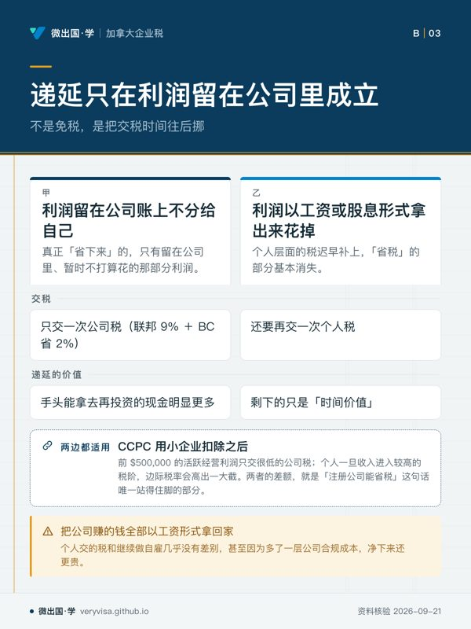
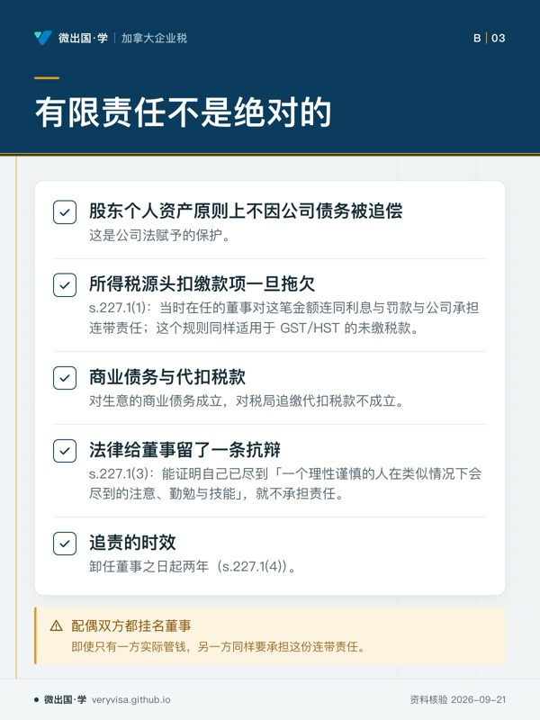

核实日期：2026-09-05｜现行口径：2026 税年（2027 年春申报）｜复核：2027-01-31（本页含 2026-01-01 起指数化的终身资本利得豁免额，是本页变动最快的一格）。 法条依据指向《所得税法》(Income Tax Act, ITA) 现行合订本（Act current to 2026-06-21）；数值指向加拿大税务局 (Canada Revenue Agency, CRA)、Corporations Canada 与卑诗省 (British Columbia, BC) 官方现行页面。GST/HST 注册与费率见
ca-business-03-gst-hst-registration-quick-method（另篇）；把已有生意的资产转进新公司的具体机制见ca-corporate-04-shareholder-loans-s85-abil-windup（另篇）；注册之后怎么从公司拿钱、工资还是股息，见ca-corporate-03-salary-vs-dividend（另篇）；公司本身怎么报 T2、小企业扣除怎么算，见ca-corporate-01-t2-intro-sbd（另篇）。本页只回答前面那一步：要不要把生意从 T2125 挪进一家公司。
自雇生意做到一定规模，几乎每个人都会被问到同一句话：「你怎么还没注册公司，注册了不是能省很多税吗？」这一页写给三种人：正在权衡要不要把自己的生意装进公司的自雇者、需要向客户解释这个决定该怎么做的报税学员、以及单纯想搞清楚「省税」这两个字背后到底是什么机制的读者。读完你应该能做到三件事：分清「递延」与「省税」是两件不同的事，前者几乎总成立，后者往往不成立；算出在自己现在的收入水平上，把利润留在公司里能拿到多大的税率差；识别出「不该注册」的三种典型情形，其中一种——个人服务业务——不但拿不到好处，反而会被课以全公司里最高的税率。
一、制度设计与底层逻辑：注册这件事，税法只关心一件事
1.1 一个商业选择，两套完全不同的算税方式
自雇（sole proprietorship）在税法上不存在「生意」与「你」的界限：T2125 表算出来的净利润，直接并进你自己那张 T1 的总收入，和你的工资、投资收入合在一起，按同一套累进税阶交税，赚一块钱就按你当时那一档的边际税率交一块钱对应的税。公司则是另一个纳税人——利润先在公司账上按公司税率交一遍税，你自己要等到真正把钱以工资或股息的形式拿出来那一天，才在个人层面再交一遍税。这不是「公司税率更低所以更省」这么简单的一句话，而是把「赚钱」与「交税」这两个时间点，在公司形式下彻底拆开了。这一拆，就是这一页要讲的全部内容的起点。
1.2 整合原理：政府设计这套双层结构的初衷是「税负相同」，不是「便宜公司」
《所得税法》背后有一条不成文但贯穿全部公司税规则的设计目标，业内称为税收整合原理 (principle of integration)：不管你是直接以个人身份赚钱，还是先通过一家公司赚钱再把利润分给自己，最后落到你个人手上的总税负，理论上应当大致相同——政府不希望「要不要注册公司」这个商业决定，被税负差异牵着走，只应该由责任保护、融资、传承这类真正的商业理由决定。
整合靠两个机制配合实现：公司交完税后把股息发给你，你在个人报表上先把这笔股息按比例毛额化 (gross-up)，模拟出公司分红前那笔税前利润的大小，再用股息税收抵免 (dividend tax credit, DTC) 把公司已经交过的那部分税抵掉（《所得税法》s.82(1)(b) 与 s.121，加拿大联邦法规库（1、2））。合资格股息与非合资格股息的毛额化比例和抵免率不同，对应的正是公司当初按 15% 一般税率还是 9% 小企业税率交的税——税率越高，允许抵免的比例也越大，这就是整合机制在数学上想做到的事。
但整合从来不是完美的。 现实中总有一个跨阶层的税负差异，正是这个差异，构成了下一节要讲的「递延」。
1.3 递延的本质：不是免税，是把交税时间往后挪，而且只有钱留在公司里才成立

加拿大受控私人公司 (Canadian-controlled private corporation, CCPC) 用小企业扣除 (small business deduction, SBD) 之后，前 $500,000 的活跃经营利润只交很低的公司税；而你个人一旦收入进入较高的税阶，边际税率会高出一大截。两者的差额，就是媒体口中「注册公司能省税」这句话唯一站得住脚的部分——但它省下来的，严格说不是税款，是把交税的时间点往后推：
- 利润留在公司账上不分给自己：只交一次公司税（联邦 9% ＋ BC 省 2%）。
- 利润以工资或股息形式拿出来花掉：还要再交一次个人税，整合机制会把公司已交的那部分抵掉一大半，但不是全部。
真正「省下来」的，只有留在公司里、暂时不打算花的那部分利润——这笔钱因为当年只按低得多的公司税率交了税，比你直接以个人身份赚同样一笔钱、当年就要按个人边际税率交税，手头能拿去再投资的现金明显更多。这个差额一年一年地滚下去，才是真正的价值所在；一旦这笔钱被取出来花掉，个人层面的税迟早补上，「省税」的部分基本消失，剩下的只是「时间价值」。教一个不准确的说法「注册公司能省很多税」，最容易让人忽略的正是这句话：递延只在利润留在公司里的那段时间里成立。
⚠️
「我注册了公司，是不是就不用交那么多税了」
不是。如果你每年把公司赚的钱全部以工资形式拿回家花掉，你个人交的税和你继续做自雇几乎没有差别，甚至因为多了一层公司合规成本（见第二节），净下来还更贵。递延的价值只在「利润留在公司里」的那部分年份里才存在。
1.4 谁与谁在博弈：政府防的是「把利润切碎、把身份切碎」
政府给低税率的前提，是这笔利润必须真的来自「活跃经营」而不是被人为包装出来的安排。围绕这个前提，规则设了三道防线：被动收入递减（公司账上囤积过多投资收入会削减小企业扣除限额，$50,000 起、$150,000 归零）、分拆收入税 (tax on split income, TOSI)（防止把股息发给没有实际参与经营的家庭成员来分摊税阶）、以及本页要重点讲的个人服务业务 (personal services business, PSB)（防止把本该是雇佣关系的收入包装成公司利润来蹭低税率）。这三道防线的存在，本身就说明了一件事：「注册公司省税」从来不是无条件成立的默认结果，而是一套需要满足前提才生效的机制，前提不满足，规则会把你打回原形，甚至罚得比不注册还重。
1.5 报错的法律后果
被认定为不符合 CCPC 资格、误用小企业扣除限额、或被判定为个人服务业务而仍按低税率报税，CRA 可以重新评税，追缴少缴的公司税差额并按规定利率计收利息；蓄意或重大过失的错报还可能触发罚款。此外，公司一旦拖欠代扣税款或 GST/HST 未缴，董事个人要承担连带责任（第二节详述）——这是「注册公司＝有限责任」这句话里最容易被忽略的例外。
二、2026 税年现行规则与数字：这条税率差到底有多大
2.1 三列表：个人最高边际税率 vs 公司综合税率，2024–2026 全部没有变化
下表把「递延」两个字换算成实际的百分比。它本身就是一个值得记住的结论：这四行数字在 2024、2025、2026 三个税年里一个百分点都没有变过——变的只是税阶的美元门槛，税率本身是长青值。
| 项目 | 2024 税年 | 2025 税年 | 2026 税年（现行） | 状态 |
|---|---|---|---|---|
| 个人最高边际税率（联邦 33% + BC 20.5%） | 53.5% | 53.5% | 53.5% | 已生效，税率未变（CRA、BC 省政府） |
| 小企业综合税率（联邦 9% + BC 2%） | 11% | 11% | 11% | 已生效，长青（CRA、BC 省政府） |
| 一般公司综合税率（联邦 15% + BC 12%） | 27% | 27% | 27% | 已生效，长青（CRA、BC 省政府） |
| 个人服务业务综合税率（联邦 28% + PSB 附加 5% + BC 12%） | 45% | 45% | 45% | 已生效，长青（CRA、加拿大联邦法规库、BC 省政府） |
这张表怎么读。 联邦个人所得税最高一档税率 33% 与 BC 最高一档税率 20.5%，合并最高边际税率 53.5%（CRA、BC 省政府）；联邦小企业税率 9% 与 BC 小企业税率 2%，合并 11%（CRA）——两者相差 42.5 个百分点，这就是「递延」两个字在 2026 税年的真实分量：把一块钱利润留在符合条件的 CCPC 里，比留在一个已经进入最高税阶的个人手上，当年少交 42.5 分的税。但请注意，这条差额只对已经站在个人最高税阶、且真的打算把利润留在公司里再投资的人才有意义；收入本就不高的自雇者，个人边际税率可能只有 20.5% 甚至更低，与 11% 的差距要小得多，注册的税务价值也小得多（见第六节案例二）。
第四行是本页要单独强调的一格。 网上流传的说法常把「个人服务业务被罚」的税率说得含糊，实际数字是可以算清楚的：联邦公司税基本税率 38%，扣除联邦税收抵免后 28%（CRA）；一般公司利润在此基础上还能再拿到 13 个百分点的一般税率减免 (general rate reduction, GRR)，降到 15%，但《所得税法》s.123.4(1) 的「完全税率应税所得 (full rate taxable income)」定义里，明文把「公司当年来自个人服务业务的收入」从这项减免的适用范围里排除（加拿大联邦法规库）——PSB 收入失去这两项减免，而且 ITA s.123.5 另加 5% 的 PSB 税，联邦合计为 33%。加上 BC 一般公司税率 12%（BC 的低税率只适用于「有资格享受联邦小企业扣除的活跃经营收入」，PSB 收入被排除在外，因此适用一般税率，BC 省政府），BC 合并税率为 45%，比 11% 小企业综合税率高 34 个百分点，比 27% 一般公司综合税率高 18 个百分点。这是对公司保留的 PSB 应税所得计算，工资扣除及股东提取的税务后果须另算。
✕
2.2 有限责任是税外的理由，但它不是绝对的
有限责任——股东的个人资产原则上不因公司债务被追偿——是公司法赋予的保护，不属于税法讨论的范围，但税法给这项保护设了一个明确的例外：《所得税法》s.227.1(1) 规定，公司未按规定代扣、代缴的所得税源头扣缴款项一旦拖欠，该公司当时在任的董事对这笔金额（连同利息与罚款）与公司承担连带责任（加拿大联邦法规库）——这个规则同样适用于 GST/HST 的未缴税款。也就是说，「注册公司能保护我的个人资产」这句话对生意的商业债务成立，对税局追缴代扣税款不成立。法律给董事留了一条抗辩：只要能证明自己已经尽到「一个理性谨慎的人在类似情况下会尽到的注意、勤勉与技能」，就不承担责任（s.227.1(3)）；追责的时效是卸任董事之日起两年（s.227.1(4)，均见 加拿大联邦法规库）。这条规则对夫妻店尤其重要——很多时候配偶双方都挂名董事，即使只有一方实际管钱，另一方同样要承担这份连带责任。
2.3 成本：注册不是免费的，而且不注册也不是零成本
把生意装进公司，会带来一串新的固定支出，这些支出与生意赚不赚钱无关：
- 注册费：联邦网上注册 $200（加急服务另加 $100，一个工作日内出结果），BC 省内注册总费用 $380（基本费 $350 加名称核准费 $30）（Corporations Canada (Innovat…、Government of British Columb…）。
- 年度申报费：联邦公司每年网上交 Annual Return 只要 $12；BC 省内公司每年交 Annual Report 要 $43.39（Corporations Canada (Innovat…、Government of British Columb…）——这是维持公司「良好状态 (good standing)」的门槛费用，不交，公司可能被强制解散。
- T2 申报：不管公司当年有没有活动、赚不赚钱，所有加拿大居民公司每个税年都要报 T2，唯三例外是免税的王室公司、Hutterite 群体与全年都是注册慈善机构的公司（CRA）——「今年公司没什么生意，先不报」不是一个合法选项。
- 会计与报税专业费用：T2125 自雇报表通常可以自己报或找一般报税员，T2 公司报表结构复杂得多（GIFI 财报、Schedule 1 到 Schedule 8 等一整套附表），绝大多数小公司会请会计师代办，这笔年度支出往往是自雇报税成本的数倍。
这三项固定成本合在一起，正是「递延」这个数字必须先扣掉的门槛。 一家利润不高的公司，省下的税可能还不够付会计费。
三、实务流程：从「决定注册」到「第一张 T2」之间要走的几步
- 选公司名与注册辖区：可以选一个描述性数字名（Numbered Company，如 1234567 B.C. Ltd.），也可以核准一个文字商号，核名不通过要重新排队；辖区选联邦还是 BC 省，见第四节。
- 拟公司章程与设立董事会：至少一名董事（BC 对私人公司没有「董事须是加拿大居民」的一般性要求，但联邦《加拿大商业公司法》对部分公司类型仍有居民董事比例的规定，跨境读者应逐案核实）。
- 申领商业编号 (Business Number, BN) 与开税号：注册完成后向 CRA 申请 BN，用于公司所得税账户、GST/HST 账户（如需要）、代扣代缴账户（如雇人发工资）。
- 建立公司账簿：与个人财务彻底分账是维持有限责任保护的前提之一——账目混同（commingling）是「揭开公司面纱 (lifting of the corporate veil)」最常见的触发理由之一。
- 年结日与第一份 T2：年结日通常选注册后不满 53 周内的任意一天（《所得税法》s.249.1(1)(a)，加拿大联邦法规库），T2 申报期限是年结后六个月，欠税却是年结后两个月内到期（CCPC 符合条件可延至三个月）——这个「报表晚、欠税早」的时间差，是公司报税与个人报税最大的流程差异，第一年最容易被忽略。
- 决定薪酬结构：领工资还是发股息、发多少，直接决定个人层面还要补多少税，这一步的细节见另一篇
ca-corporate-03-salary-vs-dividend。
四、联邦之外：BC 这条怎么走，以及联邦注册值不值
《加拿大商业公司法》(Canada Business Corporations Act, CBCA) 与 BC 省的《公司法》(Business Corporations Act) 是两套平行的注册体系，选哪一套是纯粹的商业与成本决定，与税率无关——公司交多少税只看它是不是 CCPC、经营所得多少、business limit 怎么分摊，联邦注册与省注册在这一点上完全一样。真正的差别在于费用与经营范围：
| 项目 | 联邦注册（Corporations Canada） | BC 省注册（BC Registry Services） |
|---|---|---|
| 首次注册费（网上） | $200（加急 4 小时内出结果另加 $100） | $350 基本费 + $30 名称核准 ＝ $380 |
| 年度维持费 | $12（Annual Return，网上） | $43.39（Annual Report） |
| 名称保护范围 | 全国 | 仅 BC 省 |
| 只在 BC 一省经营，是否还要多付一笔 | 是——须在 BC 另行办理省外注册 (extra-provincial registration)，基本费 $350 + 名称核准 $30 ＝ $380，与直接在 BC 注册总额相同 | 否 |
（Corporations Canada (Innovat…、Government of British Columb…）
这张表最有实用价值的一行是倒数第二行：一家只在 BC 省内经营的小生意，如果选择联邦注册，还得再在 BC 办一次省外注册、再交一次 $380，两笔加起来比直接在 BC 省注册贵得多。联邦注册真正划算的场景，是打算跨多个省经营、或看重全国范围内名称保护的生意——律师事务所连锁、跨省电商品牌是典型例子；只在温哥华或素里开一家餐馆或做一个人的咨询生意，直接走 BC 省注册通常更省钱也更简单。
BC 省这一侧的公司税率与联邦机制完全对齐：小企业税率 2%（2017-04-01 起未变）、一般税率 12%（2018-01-01 起未变）、business limit 直接沿用联邦 $500,000，不设省级独立门槛（BC 省政府）——这也是为什么第二节的三列表里 BC 那两个百分点，是全课程少见的「查过、确认长青」的省级数字。
五、历史变革：这套低税率是怎么长成现在这样的
小企业扣除并不是一项新政策，它的雏形早在 1970 年代税制改革中就已确立，用意正是本页第一节讲的整合原理：不让小企业主因为选择了公司形式而被课以高于个人经营的实质税负，同时给成长中的小企业留一笔可以按低税率滚存的再投资资金。围绕这套核心机制，近十年真正发生的变化集中在防滥用这一侧，而不是税率本身：被动收入递减规则在 2019 年之后开始生效，专门针对把小企业扣除额度当避税港、囤积巨额投资收入而不真正扩大经营的公司；应税资本递减区间也曾在 2022-04-07 之后从 $10M–$15M 收紧到现行的 $10M–$50M（CRA）。税率数字四十年没怎么变，变的是「谁有资格拿到它」这道门槛越收越紧——这正是政府在整合原理与防滥用之间不断校准的过程。
终身资本利得豁免的适用范围同样经历了一段值得记住的历史：2024-06-25 前的豁免限额是 $1,016,836，同一天起提高到 $1,250,000（该提案直到 C-15 在 2026-03-26 才正式御准成法），2026 税年恢复指数化后升至 $1,275,000，对应扣除上限 $637,500（CRA、Parliament of Canada）。这项豁免只适用于合格小企业公司股份 (qualified small business corporation shares, QSBCS) 的处置——独资或合伙生意的资产处置、以及不满足加拿大受控私人公司、90% 以上资产用于活跃经营、持股满 24 个月等条件的公司股份，都拿不到这笔豁免（CRA）。这是「注册公司」与「保持独资」在长期规划上最大的一条分野：只有把生意装进一家符合条件的公司，未来卖掉股份时才可能用上这笔终身几乎一百二十七万五千元的免税额度；独资生意卖资产，这笔豁免从一开始就不存在。
六、案例
案例一 · 温哥华的独立 IT 顾问：注册之后掉进了个人服务业务的坑
Marcus 在温哥华做软件外包，2026 年几乎全年只服务一家本地科技公司，按合同拿到 $140,000 报酬。他的会计朋友告诉他「注册公司能把税率降到 9%」，于是他注册了一家公司，把这笔收入并入公司账。问题在于：Marcus 没有其他客户，也没有雇用超过五名全职员工，这份合同的关系实质上是「他一个人为这家科技公司提供服务」，公司只是包在外面的一层壳。按定义，这构成个人服务业务：他本人是这份收入唯一的贡献者，如果没有公司存在，他理应被认定为该科技公司的雇员（CRA）。结果他的公司拿不到 9% 的小企业税率，也拿不到一般税率减免，联邦 28% 再加 PSB 附加 5%，加 BC 12%，公司保留的 PSB 应税所得合计按 45% 计；与个人自雇的比较还须结合工资扣除、股东提取与个人收入档位，不能仅凭公司税率下结论。常见错报：把这类「单一长期客户、无雇员」的安排直接当普通经营公司报税，套用 9% 税率，一旦被 CRA 重新归类为个人服务业务，差额税款加利息一次性补缴，金额可能相当可观。
案例二 · 素里的水电工夫妻店：利润全花掉的时候，注册不但不省钱还倒贴
Anna 和 David 在素里经营水电维修生意，2026 年净利润 $58,000，两人靠这笔钱支付房贷和日常开销，年底几乎分文不剩。他们的个人边际税率大约在 20.5%（BC 第一档之上、第二档区间）左右，与小企业综合税率 11% 之间只差 9.5 个百分点，而且这笔差额只有在利润留在公司里不分配时才存在——他们的经营模式是每年把利润全部取出来花掉，也就是说，这笔钱在公司账上停留的时间几乎为零，递延带来的价值也趋近于零。与此同时，公司每年固定要多付：BC 年度维持费 $43.39、T2 申报会计费用（通常远高于自雇报税费用）、以及从公司取出工资或股息带来的额外报表复杂度。净下来，注册这一年他们不但没省到税，反而净支出增加了。这是本页第一节反复强调的一句话在数字上的体现：递延的价值，只存在于「留在公司里」的那部分利润上；花掉的部分，注册与不注册的税负差距很小，而合规成本是实打实的额外支出。
案例三 · 列治文的电商创业者：递延在高收入、再投资场景下的真实价值
Wei 在列治文经营一家跨境电商生意，2026 年净利润达到 $320,000，她计划把大部分利润留下来扩充库存与营销预算，个人只从公司领取够生活开销的部分。以自雇身份报税，超出 $258,482 的那部分利润要按 33% 联邦加 20.5% 省税、合计 53.5% 的最高边际税率交税；注册成 CCPC 后，前 $500,000 的活跃经营利润按 11% 的小企业综合税率交税——同样一笔留在生意里用于扩张的钱，注册后当年可支配的现金比不注册多出 42.5 个百分点。她同时把公司股权结构设计成日后可能符合合格小企业公司股份的条件（90% 以上资产用于活跃经营、持股满 24 个月），这样几年后如果决定出售生意，还有机会用上终身资本利得豁免——这条路径独资经营从一开始就走不通。常见错报：把「留存利润」与「个人可支配收入」混为一谈，误以为公司账上多出来的钱等于自己个人财富的增加，忽略了这笔钱要拿出来花掉时，个人层面的税迟早要补上。
七、常见错报与自查清单
- 把「省税」和「递延」当成同一件事——怎么识别：先问自己「这笔利润今年会不会被我取出来花掉」，会的话，注册对当年税负的影响很小；不会，才有实质的递延价值。
- 只看服务客户数量少、忽略雇员人数这一条豁免——怎么识别：个人服务业务的定义里有一条「全年雇有超过五名全职员工」即可豁免；只服务一个客户但自己雇了六名员工的公司，不落入这个定义，别把「客户单一」直接等同于「一定是 PSB」。
- 以为独资生意资产处置也能用终身资本利得豁免——怎么识别：这项豁免只适用于合格小企业公司股份的处置，独资生意的资产（设备、存货、商誉）出售不适用，必须先确认交易标的是不是「公司股份」。
- 忽略公司年结日之后「报表晚、欠税早」的时间差——怎么识别：把年结日、T2 申报截止日（六个月后）、欠税到期日（两个月或三个月后）三个日期分别标在日历上，而不是默认它们和个人报税的 4 月 30 日一样。
- 误以为注册公司能完全隔绝税务上的个人责任——怎么识别：只要公司名下有代扣代缴税款或 GST/HST 欠税，检查自己是不是在任董事；「有限责任」保护商业债务，不保护这一类税款连带责任。
- 拿联邦 business limit 当全国通则套用到每个省——怎么识别：BC 沿用联邦 $500,000 没有问题，但如果客户或生意跨到 Nova Scotia（$700,000）或 Prince Edward Island（$600,000），要单独核实该省是否已经调整了自己的小企业限额。
术语双语对照
| 英文 | 中文 | 一句机制 |
|---|---|---|
| sole proprietorship | 个体独资经营 | 生意收入直接并入个人报表，没有法律上的独立主体 |
| incorporation | 公司注册 | 把生意变成一个独立法人的法律行为 |
| Canadian-controlled private corporation (CCPC) | 加拿大受控私人公司 | 决定能否享受全部公司税优惠的资格开关 |
| small business deduction (SBD) | 小企业扣除 | 把联邦公司税率从 15% 降到 9% 的非退还税额扣减 |
| general rate reduction (GRR) | 一般税率减免 | 把联邦公司税率从 28% 降到 15% 的普适减免，个人服务业务被明文排除 |
| personal services business (PSB) | 个人服务业务 | 通过公司提供实质上属于雇佣关系的服务，公司拿不到低税率 |
| incorporated employee | 挂公司雇员 | 个人服务业务定义里那个通过自己的公司提供服务的个人 |
| principle of integration | 税收整合原理 | 无论直接赚钱还是通过公司赚钱，总税负设计上应大致相同 |
| tax deferral | 税务递延 | 把交税的时间点推迟到利润真正被取出的那一天 |
| dividend gross-up | 股息毛额化 | 把收到的股息按比例放大，还原出公司分红前的税前利润规模 |
| dividend tax credit (DTC) | 股息税收抵免 | 抵掉公司层面已经交过的那部分税，避免同一笔钱交两次全额税 |
| business limit | 业务限额 | 能享受小企业税率的应纳税所得上限，联邦通则 $500,000 |
| passive income grind | 被动收入递减 | 公司被动投资收入超过 $50,000 时业务限额被逐步削减 |
| tax on split income (TOSI) | 分拆收入税 | 对没有实质参与经营的家庭成员领取的股息，按最高档税率课税 |
| lifetime capital gains exemption (LCGE) | 终身资本利得豁免 | 出售合格小企业公司股份的资本利得终身免税额度 |
| qualified small business corporation share (QSBCS) | 合格小企业公司股份 | 享受终身资本利得豁免资格的股份类型，需满足经营性质与持股期限条件 |
| s.85 rollover | 第85条转让 | 把已有生意的资产按选定价格无税转入公司的机制 |
| director's liability | 董事个人责任 | 公司未代缴代扣税款或 GST/HST 时，在任董事个人连带承担 |
| extra-provincial registration | 省外注册 | 联邦公司或外省公司要在 BC 境内实际经营，须另行在 BC 登记 |
| T2 Corporation Income Tax Return | T2 公司所得税申报表 | 每一家加拿大居民公司每个税年都必须提交的公司报税表 |
| Business Number (BN) | 商业编号 | 公司在 CRA 名下用于所得税、GST/HST、代扣代缴等账户的统一识别号 |
来源
- ITA s.123.5：PSB 额外 5% 税；CRA PSB fact sheet，2026-09-05 回核。
现行数字与法条均指向：加拿大税务局 (Canada Revenue Agency, CRA)、Corporations Canada（隶属创新、科学与经济发展部）、卑诗省政府 (Government of British Columbia)、《所得税法》(Income Tax Act) 现行合订本。
本页知识卡
不看正文也能拿到这一节的核心内容：先看导读，再看图。点图放大，左右翻页。
- 先看先看中间的毛额化与抵免，理解两项机制怎样处理公司已交过的税。
- 易漏两类股息参数不同；高税率对应更高抵免，但现实仍有税负差异。
- 下一步去练习判断一笔股息先后经过哪两个机制。

- 先看先看「交税」这一行，再看递延价值如何随利润取出而变化。
- 易漏图比较的是资金停留与取用两个状态，不代表永久减少税款。
- 下一步去练习判断你的利润会留在公司还是拿回家花掉。

- 先看先找责任触发条件，再核对抗辩和时效，这三处决定董事责任范围。
- 易漏夫妻店里，是否实际管钱不是唯一判断；挂名董事同样可能承担责任。
- 下一步去练习判断一个董事是否落入这项税法例外。